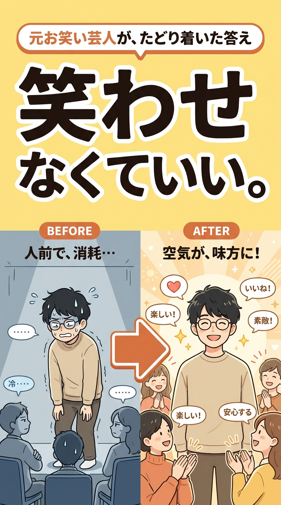
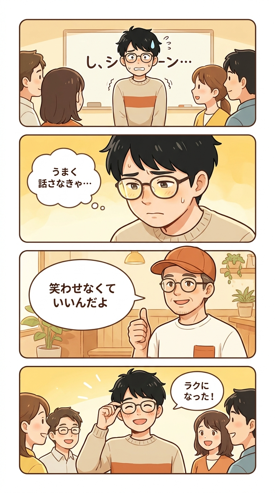
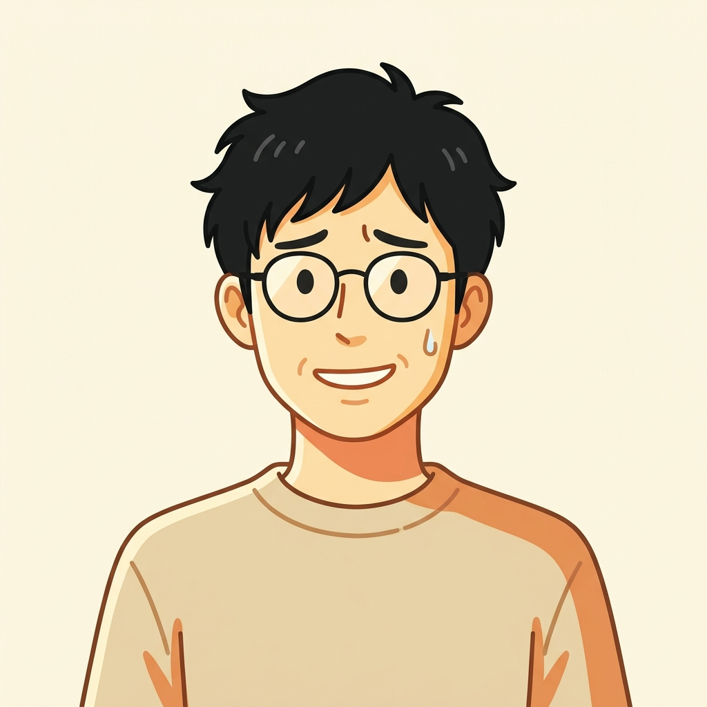
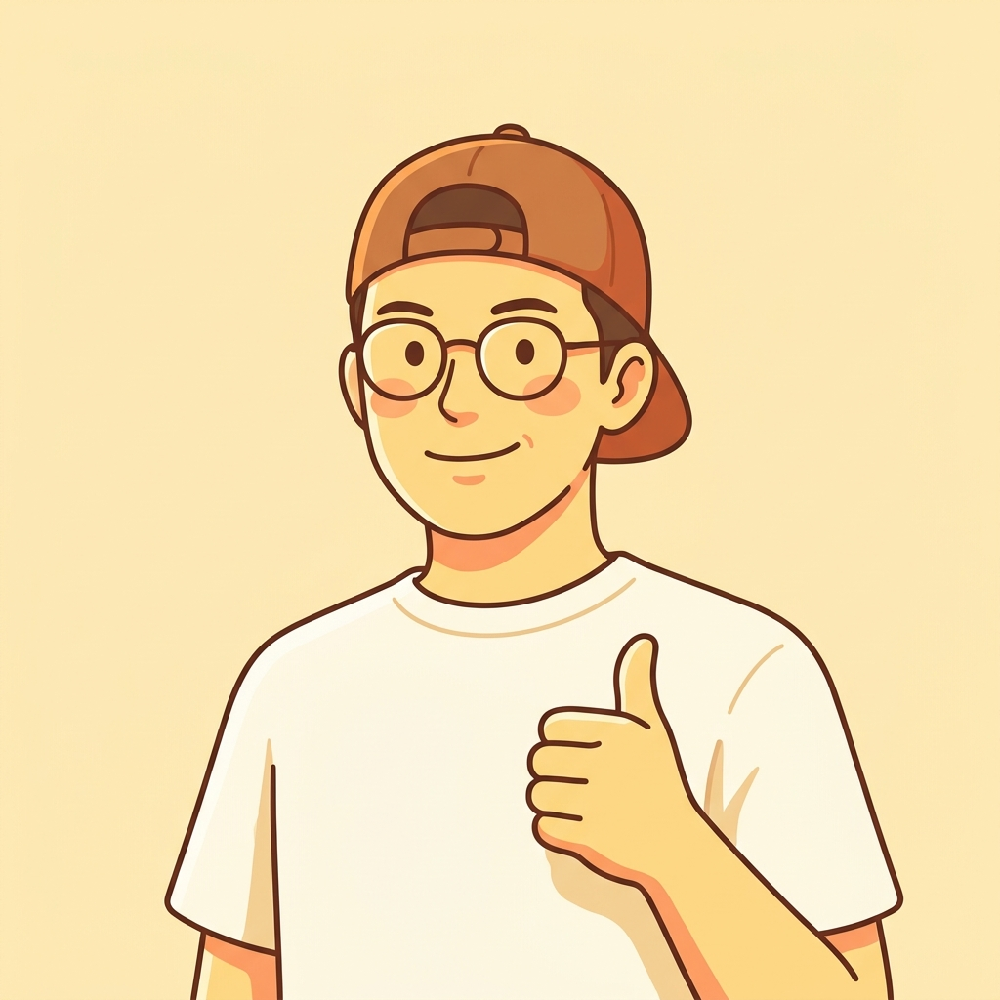
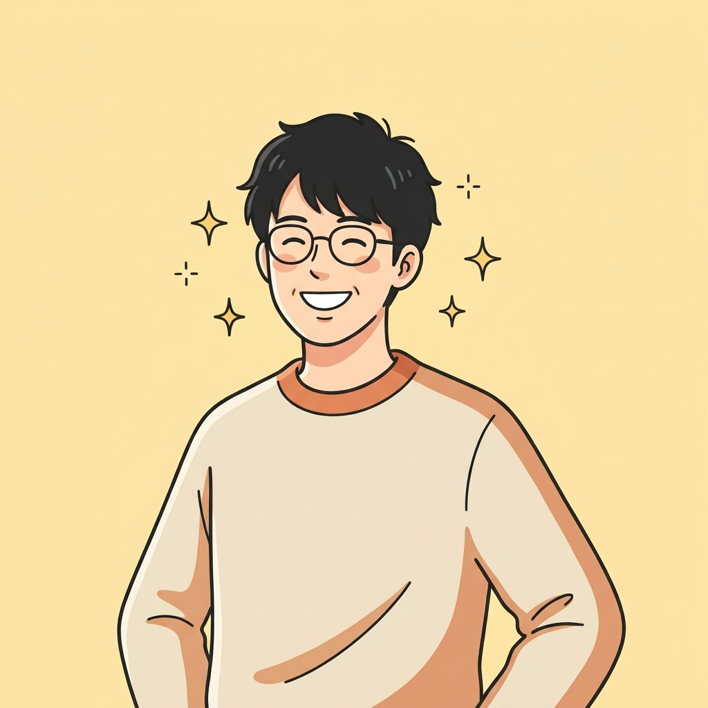
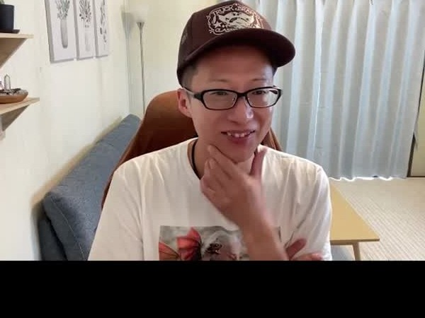

まずはコレ！
★ MANGA ★
まんがで読む、この講座のはなし

あるある…人前で話すたび、
こんなこと、ありませんか？
人前で話すたび、
どっと疲れる…

人前だと、相手の反応が気になりすぎる…
沈黙が来ると、頭が真っ白に…！
堅い人・つまらない人とは思われたくない
笑いを入れたいけど、スベるのが怖い…
だいじょうぶ
でも、安心してください
それ、あなたのせい
じゃないんです。
「話し方」ではなく、
空気との“距離感”の問題だから。
NG集「笑わせる練習」
だから、この講座は…
「笑わせる練習」
は、しません。
🙅
無理に笑わせる練習
🙅
相手を下げる盛り上げ方
🙅
テンションを上げる指導
🙅
「自信を持とう」のメンタル論
笑いは、目的じゃない。
こっちが本題！場がゆるむ、
かわりに、やること
場がゆるむ、
4つの「ひと言」
1
空気を実況する、ひと言
例:「この空気、どうすればいいですか？笑」
2
スベりそうな時の、逃げ言葉術
例:「刺さった人だけ、持って帰ってください」
3
崩れない、立ち位置づくり
例:「今日はこんなテンションでいきますね」
4
期待値を下げる、笑いの使い方
例:「僕の話は雑音だと思って聞いてください」
ここ重要！「話し方の先生」じゃ、
なぜ、この人から学ぶの？
「話し方の先生」じゃ、
ありません。

今も毎週、本番の現場に立つ
現役MC（司会）です。
元お笑い芸人YouTuber現役MC・司会上級心理カウンセラー
笑いを仕事にしてきた
“元芸人”だからこそ。
——笑わせなくて、いい。
うれしい声受けてみて、
★ VOICE ★
受けてみて、
どう変わった？

Kさん（34歳・会社員）＜前＞ 大人数の場で、会話に入れなかった
↓
＜後＞ 軽い気持ちで、自己表現にトライできるように！
※構成イメージのサンプルです（公開時に実際の声へ差し替え）
今だけ！
講座のごあんない
📚 全4回／1回90分（計6時間）
👥 少人数制（最大5名）
💻 オンライン（Zoom）
👥 少人数制（最大5名）
💻 オンライン（Zoom）
🎉 期間限定モニター価格
通常 98,000円
50,000円（税込）
まずは、ちょっと
話してみませんか？
約20分・Zoom／無理な勧誘はしません🙆
LINEで個別相談を申し込む講師紹介
この講座をつくった人
前野 太志（まえの ひろし）
元お笑い芸人／上級心理カウンセラー／笑顔ナビゲーター
「どうすれば人は、無理せず人前に立てるのか」。その答えを、言葉とワークにしました。

＜実際の前野さん＞空気は、敵じゃない。
味方にできる。
人前で消耗するのは、
あなたが弱いからじゃありません。